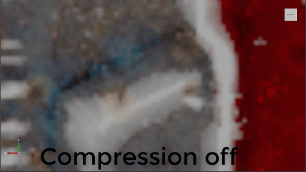

Texture compression
Warning
Приносим свои извинения за неудобства. Для этой страницы нет перевода на русский язык. Она будет отображаться на английском языке.
Beginner Artist Programmer
Compressed textures use up to 50% less space and are faster to load. Compression produces results similar to JPEG compression. The animation below was recorded with the camera positioned extremely close to the texture; at normal distances, the difference isn't noticable.

For color textures, compression is best used for visually busy images, where the effects are less noticeable. You probably don't want to compress textures with fine edges, such as logos used in splash screens.
Compression converts the texture to a multiple of 4. If the texture isn't already a multiple of 4, Stride expands it.
Compression removes data from the image based on the texture type:
| Texture type | Compression |
|---|---|
| Color | Compresses all RGBA channels. If the Alpha property is set to None in the texture properties, the alpha channel is removed |
| Grayscale | Removes all RGBA channels except red |
| Normal map | Removes the blue and alpha channels (alpha isn't used in normal maps anyway). The blue channel is reconstructed from the red and green channels (assuming a pixel has a vector length of 1) |